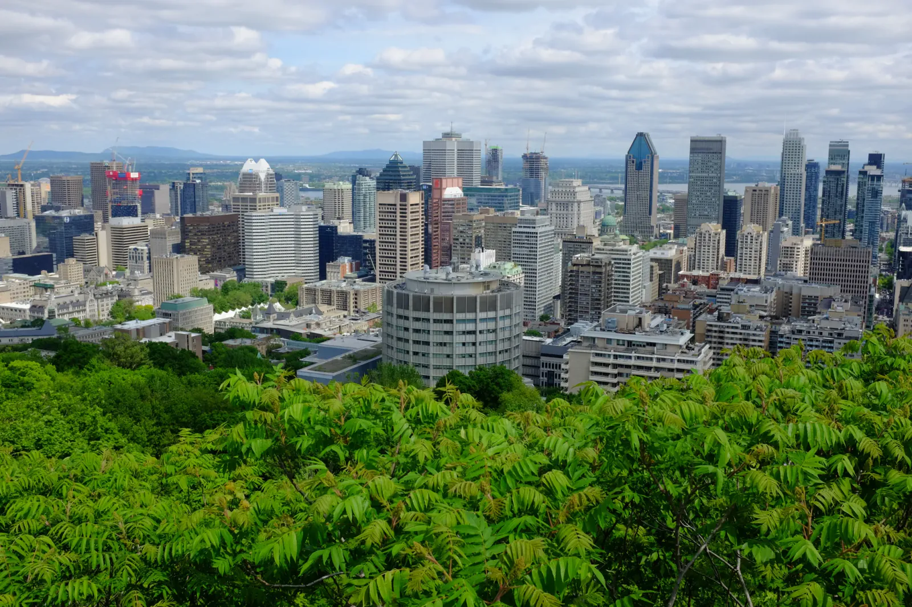

Familiar Skyline
I was raised in Montréal, and I came back for two days before a ship carried me down the St. Lawrence. French was in the air again, the native tongue I somehow forgot. It's strange to be a visitor in the city you grew up in. I started on the mountain. At just 764 feet, Mount Royal wouldn't turn a head in the Rockies, but in Montréal it's simply the mountain, and the whole city takes its name from it. From the lookout, downtown rose beyond a thicket of green sumac.
The first day was all green, which is not what you expect of a city this big. In the woods, white wildflowers were scattered across the ground around the fallen logs. Between the trees sat a pair of peaked glass pavilions in black frames, sharp-edged and modern against all that foliage. A pale green dome rose above the treetops. Later, in a dim chapel, a statue stood watch over a stepped bank of red candles, lit from above by a ring of blue light.

The second day belonged to the river. Parc Jean-Drapeau covers a pair of islands in the St. Lawrence, and the metro runs straight out to it, which is the kind of thing I love in a city. The Biosphère rose above the trees. Buckminster Fuller designed it as the American pavilion for Expo 67, and a fire burned off its acrylic skin in 1976, so it has been see-through ever since. Nearby, white allium globes bloomed beside a plaza. The river also gave me a new angle on the city. From high above the water, a long freight train ran along the quay past the Molson brewery's brick tower, downtown stood beyond it, and the green hump of the mountain rose behind. I had stood on that hump the day before, looking down at all of this. Now I was looking back at it from over the water. Cities change and people move away, but the mountain keeps its shape.